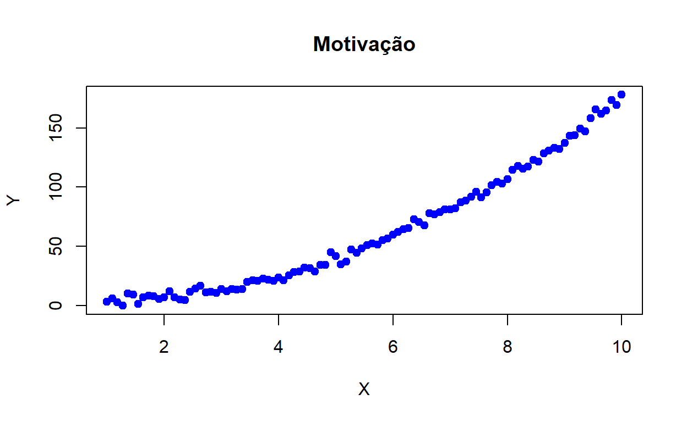
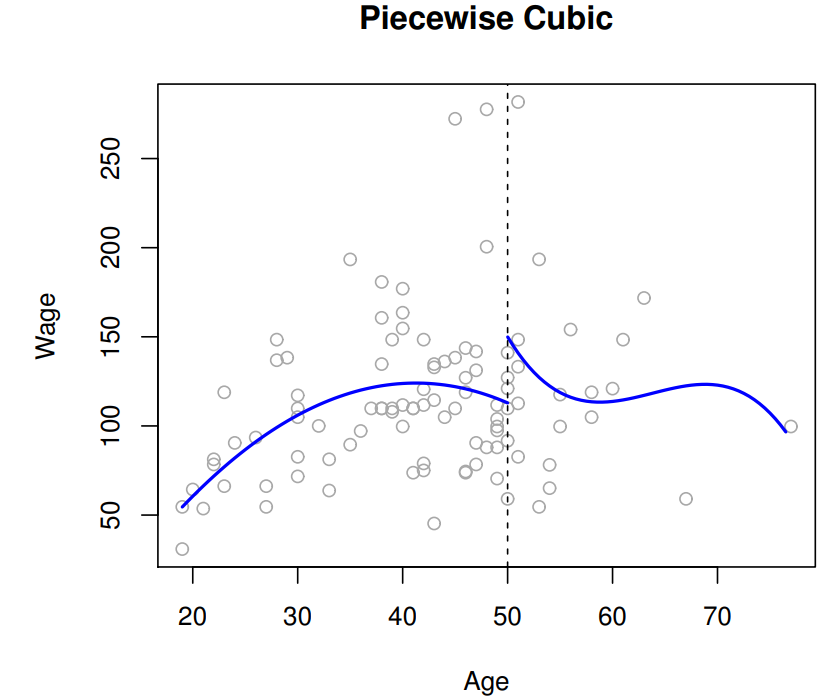
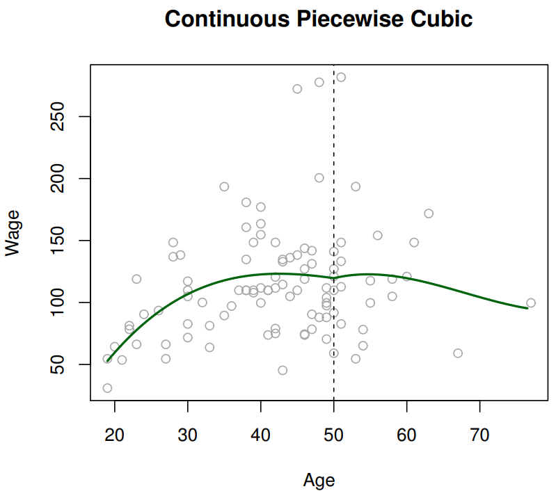
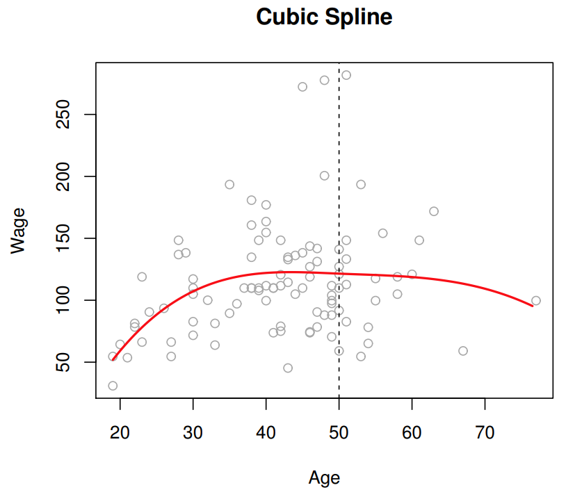
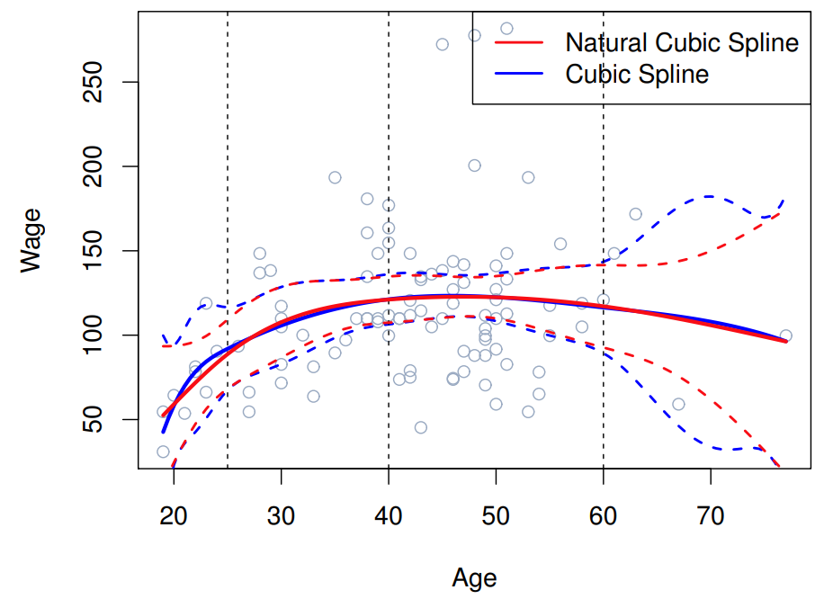
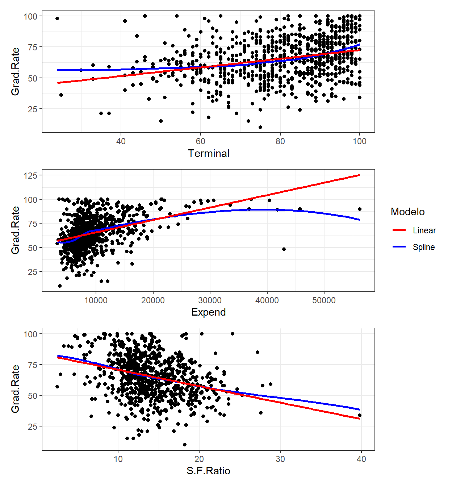
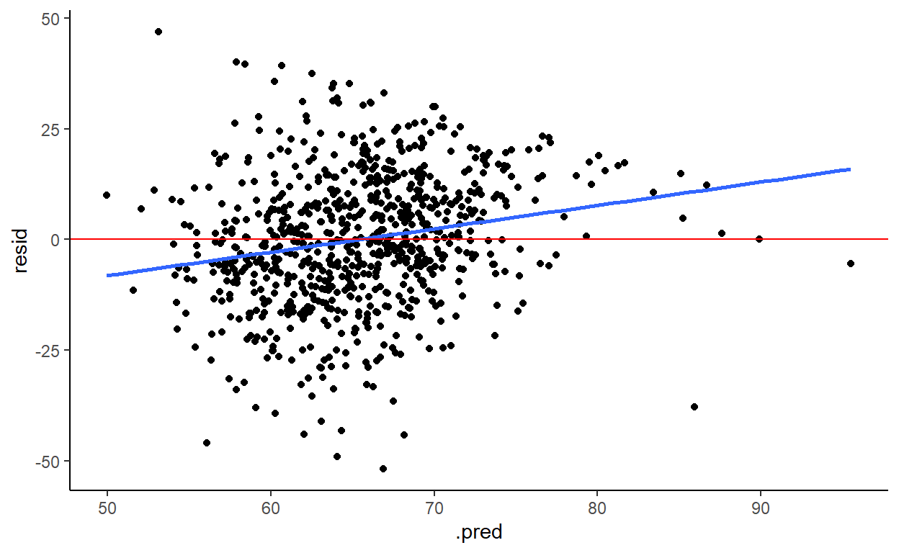
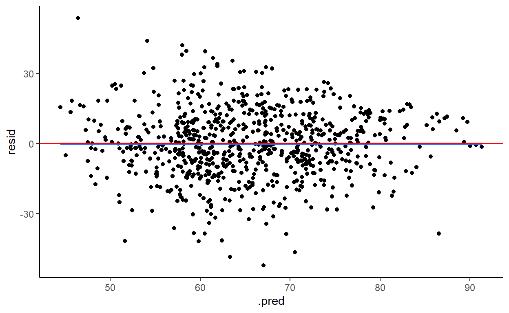

Os modelos lineares são simples e úteis, mas têm limitações na predição devido à sua suposição de linearidade. Vamos aprimorar modelos lineares relaxando a suposição de linearidade, utilizando técnicas simples como regressão polinomial além de abordagens mais complexas como splines.
Vimos sobre como dar mais flexibilidade à nossa modelagem usando KNN e modelos de árvores de decisão. Nesse artigo, veremos como a regressão linear que já conhecemos pode ser extendida para modelar tendências não lineares.

Como os dados acima mostram, é útil para nós contruir modelos de Machile Learning que sejam capazes de capturar relações não lineares.
Uma técnica que se encaixa exatamente no framework da regressão linear é a regressão polinomial. Nela, usamos termos polinomiais para um preditor em um modelo de regressão linear. Por exemplo, em vez de um modelo linear do tipo: \[y_i=\beta_0+\beta_1x_i+\epsilon_i\], usamos: \[y_i=\beta_0+\beta_1x_i+\beta_2x_i^2 + \beta_3x_i^3+\epsilon_i\]
Computacionalmente, isso requer adicionarmos transformações nos valores originais como novos preditores no modelo. Nós criamos essas transformações elevando ao quadrado e ao cubo o preditor \(x\). Esses novos preditores são então tratados como uma variável qualquer em uma regressão linear por mínimos quadrados.
Uma desvantagem da regressão polinomial é que ela impõe uma estrutura polinomial global entre a relação de \(x\) e \(y\). Isso pode ser limitante se, por exemplo, a relação for cúbica em um intervalo e linear em outro. Então, será que é possível fazer polinomios em partes?
Sim, podemos! Em vez de ajustar um polinomio globalmente sobre todo o intervalo de \(x\), podemos ajutar múltiplos polinomios localmente em diferentes regiões de \(x\).

No exemplo acima, o salário é modelado como uma função não linear da idade com 2 polinomios, a depender se idade é maior ou menor que 50 anos:
\(y_1=\beta_{01}+\beta_{11}Age_i+\beta_{21}Age_i^2+\beta_{31}Age_i^3+\epsilon_i\), se \(Age_i < 50\) \(y_1=\beta_{02}+\beta_{12}Age_i+\beta_{22}Age_i^2+\beta_{32}Age_i^3+\epsilon_i\), se \(Age_i > 50\)
O ponto em que ocorre a troca de função (50 anos) é chamado de nó. Um problema que podemos notas de imediato é a descontinuidade no nó, indicando que provavelmente não é um bom modelo para esse contexto. Essas descontinuidades fazem com que polinomio por partes não sejam muito apropriados para modelagem. Entretanto, eles podem ser melhorados com a ajuda de propriedades matemáticas que a suavidade nesses nós.
Essas propriedades conseguem forçar um polinomio por partes a serem contínuos e terem primeira e segunda derivadas contínuas nos nós. Essas funções resultantes são chamadas de Splines Cúbicas.

Esse segundo gráfico busca corrigir a descontinuidade do outro modelo. Porém, ele só forçou a função a ser contínua no nó - não necessariamente a ter primeira e segunda derivadas contínuas. Ele parece melhor que o primeiro gráfico, porque é contínuo, mas ainda está estranho, visto que a tendencia muda abruscamente.

Esse último gráfico mostra uma função que foi forçada a ser contínua no nó e a ter derivadas contínuas também. Ele parece suave e também parece se ajustar bem aos dados. Essa função é a Spline Cúbica.
Um problema com as splines cúbicas é que nas regiões de limite (regiões menores que o menor nó e maiores que o maior nó) elas podem ter muita variabilidade, resultando em predições menos acuradas.

Na figura, a linha sólida azul é um modelo spline cúbico. As linhas tracejadas em azul nos dão o intervalo de confiança para os valores previstos pelo modelo. Podemos ver que nas regiões limítrofes, as bandas são mais alargadas, indicando que a incerteza do modelo nessa região.
Uma pequena modificação no spline cúbico é chamada de spline cúbico natural. Com essa alteração, o modelo impõe que os polinomios são lineares nas regiões de limites. Podemos observar na figura que a função spline cúbica natural (em vermelho), tem uma variabilidade muito menor nos limites. Isso torna esse modelo muito popular para modelar relações não lineares, devido a sua flexibilidade ao lidar com vários tipos de não-linearidade.
Lembre-se que na regressão polinomial, nós modelamos uma tendência não linear global para um variável qualquer incluindo novas versões transformadas da variável original. Essas transformações são as diferentes potências dos preditores.\[y_i=\beta_0+\beta_1x_i+\beta_2x_i^2 + \beta_3x_i^3+\epsilon_i\] De forma similar, nós usamos um conjunto de variáveis transformadas quando modelamos splines em modelos de regressão. Porém, em vez de uma simples transformação na potência, são usadas funções polinomiais mais complexas para transformar os preditores: \[y_i=\beta_0+\beta_1f_1(x_i)+...+\beta_pf_p(x_i)+\epsilon_i\] A ideia é que a combinação dessas complexas transformações polinomiais tem sucesso ao criar uma função spline natural do preditor \(x\), com as seguintes propriedades:
Para construir modelos com splines no tidymodels, seguimos a mesma estrutura que usamos para modelos de regressão linear comuns, mas acrescentamos alguns passos de pré-processamento à nossa receita.
Para trabalhar com splines, usamos ferramentas do pacote splines. A função step_ns(), baseada em ns() desse pacote, cria as transformações necessárias para gerar uma função de spline cúbica natural para um preditor quantitativo. A função step_bs(), baseada em bs() desse pacote, cria as transformações necessárias para criar uma função de spline de base (tipicamente chamada de B-splines) para um preditor quantitativo.
O argumento deg_free em step_ns() representa os graus de liberdade: - deg_free = # nós + 1. - Os graus de liberdade são o número de coeficientes nas funções de transformação que são livres para variar (basicamente, o número de parâmetros subjacentes por trás das transformações). - Os nós são escolhidos usando percentis dos valores observados.
O argumento options em step_bs() permite especificar nós específicos: - options = list(knots = c(2, 4)) define um nó em 2 e um nó em 4 (a escolha dos nós deve depender do intervalo observado do preditor quantitativo e onde você vê uma mudança na relação).
Qual é a diferença entre splines naturais (ns) e B-splines (bs)?
Spline natural é uma variante do B-spline com restrições adicionais (o grau do polinômio perto das extremidades é menor). - Splines cúbicos naturais são os mais comuns. - Tipicamente, os nós são escolhidos com base nos quantis do preditor (por exemplo, 1 nó será colocado na mediana, 2 nós serão colocados no 33º e 66º percentis, etc.).
Vamos usar o banco de dados College do pacote ISLR
# Carregar pacotes necessários
library(tidymodels)
library(ISLR)
# Configurar preferências do tidymodels
tidymodels_prefer()
# Carregar conjunto de dados College do pacote ISLR
data(College)
# Criar uma cópia do conjunto de dados College e adicionar uma coluna "school" com os nomes das escolas
college <- College %>%
mutate(school = rownames(College)) %>%
filter(Grad.Rate <= 100) # Filtrar os dados para garantir que Grad.Rate seja menor ou igual a 100
# Resetar os nomes das linhas para evitar conflitos
rownames(college) <- NULLVamos modelar a taxa de graduação (‘Grad.Rate’) como uma função de 4 preditores: Private, Terminal, Expend e S.F.Ratio.
Vamos fazer gráficos de dispersão dos preditores quantitativos e do resultado com 2 diferentes linhas de suavização para explorar possíveis não linearidades.
terminal_plot <- ggplot(college, aes(x = Terminal, y = Grad.Rate)) +
geom_point() +
geom_smooth(color = "blue", se = FALSE) +
geom_smooth(method = "lm", color = "red", se = FALSE) +
theme_bw() +
labs(color = NULL)
expend_plot <- ggplot(college, aes(x = Expend, y = Grad.Rate)) +
geom_point() +
geom_smooth(aes(color = "Spline"), se = FALSE) + # Definindo o rótulo para a linha azul
geom_smooth(method = "lm", aes(color = "Linear"), se = FALSE) + # Definindo o rótulo para a linha vermelha
scale_color_manual(values = c("Spline" = "blue", "Linear" = "red")) + # Definindo as cores e rótulos
theme_bw() +
labs(color = "Modelo") # Adicionando rótulo da legenda
ratio_plot <- ggplot(college, aes(x = S.F.Ratio, y = Grad.Rate)) +
geom_point() +
geom_smooth(color = "blue", se = FALSE) +
geom_smooth(method = "lm", color = "red", se = FALSE) +
theme_bw() +
labs(color = NULL)
library(patchwork)
terminal_plot / expend_plot / ratio_plot
Agora, vamos utilizar o tidymodels para ajustar um modelo de regressão linear (ainda sem splines) com as seguintes especificações:
set.seed(123)
# Criar dobras para validação cruzada
data_cv8 <- vfold_cv(college, v = 8)
# Especificação do modelo Lasso com ajuste
lm_lasso_spec_tune <-
linear_reg() %>%
set_args(mixture = 1, penalty = tune()) %>% ## mixture = 1 indica Lasso
set_engine(engine = 'glmnet') %>%
set_mode('regression')
# Receita (recipe)
full_rec <- recipe(Grad.Rate ~ Private + Terminal + Expend + S.F.Ratio, data = college) %>%
step_normalize(all_numeric_predictors()) %>%
step_dummy(all_nominal_predictors())
# Fluxo de trabalho (Workflow)
lasso_wf_tune <- workflow() %>%
add_recipe(full_rec) %>%
add_model(lm_lasso_spec_tune)
# Ajuste do modelo (testando uma variedade de valores de penalidade Lambda)
penalty_grid <- grid_regular(
penalty(range = c(-3, 1)), # transformado para log10
levels = 30)
tune_output <- tune_grid(
lasso_wf_tune, # fluxo de trabalho
resamples = data_cv8, # dobras de validação cruzada
metrics = metric_set(metrics = mae),
grid = penalty_grid # grade de penalidade definida acima
)
# Selecionar o melhor modelo e ajustar
best_penalty <- tune_output %>%
select_by_one_std_err(metric = 'mae', desc(penalty))
ls_mod <- best_penalty %>%
finalize_workflow(lasso_wf_tune,.) %>%
fit(data = college)
# Observar qual variável é a "menos" importante
ls_mod %>% tidy() # A tibble: 5 × 3
term estimate penalty
<chr> <dbl> <dbl>
1 (Intercept) 60.1 2.04
2 Terminal 2.26 2.04
3 Expend 2.86 2.04
4 S.F.Ratio 0 2.04
5 Private_Yes 7.27 2.04Gráficos dos resíduos em relação aos 3 preditores quantitativos para avaliar a adequação dos termos lineares
# Calcular as previsões e os resíduos do modelo ls_mod para o conjunto de dados 'college'
ls_mod_output <- college %>%
bind_cols(predict(ls_mod, new_data = college)) %>%
mutate(resid = Grad.Rate - .pred)
# Criar um gráfico de dispersão dos resíduos em relação às previsões
# Adicionar uma linha de tendência linear e uma linha horizontal representando a linha de base (resíduos iguais a zero)
ggplot(ls_mod_output, aes(x = .pred, y = resid)) +
geom_point() +
geom_smooth(method = "lm", se = FALSE) +
geom_hline(yintercept = 0, color = "red") +
theme_classic()
Vamos estender nosso melhor modelo de regressão linear com funções de spline dos preditores quantitativos (mantendo Private como está).
Vamos atualize a receita do para ajustar um modelo linear (com a ‘engine’ lm em vez de lasso) com os 2 melhores preditores quantitativos usando splines naturais que têm 2 nós (= 3 graus de liberdade) e incluir Private. Ajustar este modelo com validação cruzada (CV), utilizando fit_resamples (com as mesmas dobras de antes) para comparar o MAE e, em seguida, ajustar o modelo com todos os dados de treinamento. Chamaremos este modelo ajustado de ns_mod.
# Model Spec
lm_spec <-
linear_reg() %>%
set_engine(engine = 'lm') %>%
set_mode('regression')
# New Recipe (remove steps needed for LASSO, add splines)
ns_rec <- recipe(Grad.Rate ~ Private + Terminal + Expend, data = college) %>%
step_ns(all_numeric_predictors(), deg_free = 3) %>%
step_dummy(all_nominal_predictors())
# Workflow (Recipe + Model)
ns_wflow <- workflow() %>%
add_model(lm_spec) %>%
add_recipe(ns_rec)
# CV to Evaluate
cv_output <- fit_resamples(
ns_wflow, # workflow
resamples = data_cv8, # cv folds
metrics = metric_set(metrics = mae)
)
cv_output %>% collect_metrics()# A tibble: 1 × 6
.metric .estimator mean n std_err .config
<chr> <chr> <dbl> <int> <dbl> <chr>
1 mae standard 11.6 8 0.407 Preprocessor1_Model1# Fit with all data
ns_mod <- fit(
ns_wflow, #workflow
data = college
)Gráficos dos resíduos em relação aos 3 preditores quantitativos para avaliar se as splines melhoraram o modelo
# Calcular as previsões e os resíduos do modelo ns_mod para o conjunto de dados 'college'
ns_mod_output <- college %>%
bind_cols(predict(ns_mod, new_data = college)) %>%
mutate(resid = Grad.Rate - .pred)
# Criar um gráfico de dispersão dos resíduos em relação às previsões
# Adicionar uma linha de tendência linear e uma linha horizontal representando a linha de base (resíduos iguais a zero)
ggplot(ns_mod_output, aes(x = .pred, y = resid)) +
geom_point() +
geom_smooth(method = "lm", se = FALSE) +
geom_hline(yintercept = 0, color = "red") +
theme_classic()
Comparando os 2 gráficos de resíduos, fica claro que o modelo splines se ajusta melhor aos dados. Vamos agora comparar as métricas
# Coletar métricas do ajuste do modelo com hiperparâmetros variados e filtrar para o melhor parâmetro encontrado
tune_output %>% collect_metrics() %>% filter(penalty == (best_penalty %>% pull(penalty)))# A tibble: 1 × 7
penalty .metric .estimator mean n std_err .config
<dbl> <chr> <chr> <dbl> <int> <dbl> <chr>
1 2.04 mae standard 12.0 8 0.343 Preprocessor1_Model25# Coletar métricas do ajuste do modelo com validação cruzada
cv_output %>% collect_metrics()# A tibble: 1 × 6
.metric .estimator mean n std_err .config
<chr> <chr> <dbl> <int> <dbl> <chr>
1 mae standard 11.6 8 0.407 Preprocessor1_Model1O erro absoluto médio também está menor, indicando melhor performance.